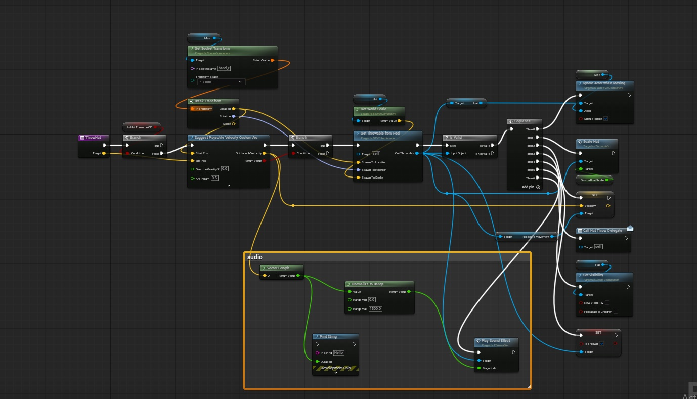
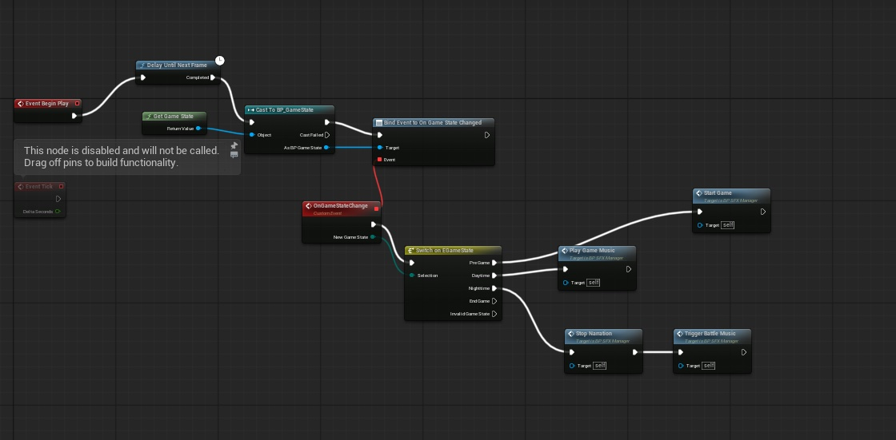

game audio 2026
This year I’ve completed two game jams as the Sound Designer, working across Unreal Engine and Unity to explore both interactive audio implementation and sound design.
For SGJ, I worked on The Man with the Big Hat, utilizing Unreal Engine Blueprints, Reaper, and GitHub to collaborate with the team. Working with Blueprints was a shift from the Unity C# and Godot GDScript systems I had previously worked with, giving me an opportunity to approach interactive audio implementation from a different perspective. I built a sound manager to handle music playback based on game state, as well as an audio system for the player's hat throw, using the hat's velocity to dynamically control its pitch and spatializing the sound as the object moves through the environment.
For the 2026 GMTK Game Jam, I worked as the Sound Designer for Brrreak it Down, creating the game's sound effects for its fast-paced vampire gameplay and disco-inspired aesthetic. The game placed #80 in Audio out of 10,533 entries.

Hat Throw — Interactive Audio. Gameplay velocity drives the pitch of the hat's sound in real time.

Music Manager — Game State Audio. Game-state changes trigger the appropriate music behavior, including transitions into battle music.